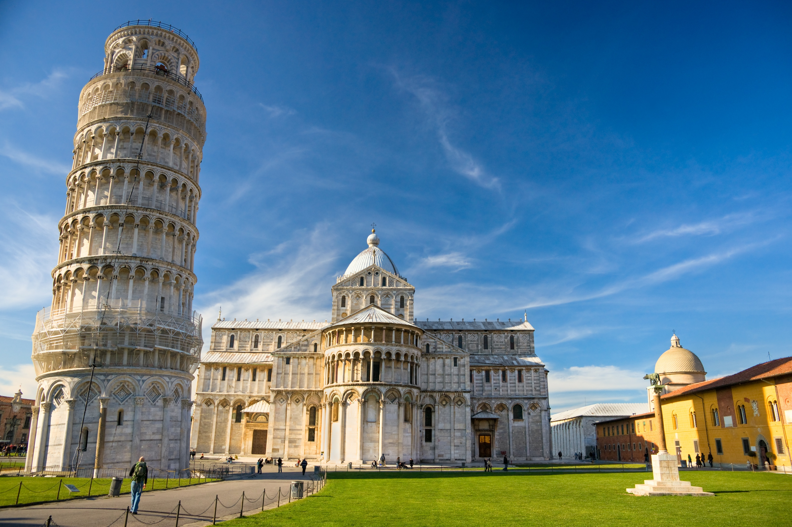

ITALIA
O tara minunata!

Pisa
Turnul inclinat din Pisa.

Roma
Legendarul Colosseum din Roma.
O tara minunata!
Turnul inclinat din Pisa.
Legendarul Colosseum din Roma.
Italia, oficial Republica italiană, este un stat unitar, republică parlamentară, aflat în Europa de sud. Ea acoperă o arie de 301.338 km² și are o climă temperată; datorită formei părții sale continentale, este denumită pe plan intern lo Stivale („Cizma”).Cu 61 de milioane de locuitori, este a cincea cea mai populată țară a Europei. Italia este o țară dezvoltată și are a treia cea mai mare economie din zona Euro și a opta din lume după PIB nominal. Din vremurile antice, culturile etruscă, Magna Graecia și altele au înflorit pe teritoriul actual al Italiei, până când au fost în cele din urmă absorbite de Roma, care timp de secole a rămas centrul politic și religios al civilizației occidentale, capitala Imperiului Roman și apoi centrul creștinismului. În Evul Mediu Întunecat, Peninsula Italică s-a confruntat cu dezastruoase invazii ale triburilor barbare, dar începând cu secolul al XI-lea, numeroase orașe-stat italiene au început să înflorească practicând navigație, comerț și întreținând instituții bancare (capitalismul modern își are originile în Italia medievală).Mai ales în timpul Renașterii, cultura italiană a înflorit, producând cărturari, artiști și polimați ca Leonardo da Vinci, Galileo, Michelangelo și Machiavelli.Exploratorii italieni ca Marco Polo, Columb și Vespucci au descoperit noi rute către Orientul Îndepărtat și către Lumea Nouă, contribuind la epoca marilor descoperiri pentru europeni.Totuși, Italia a rămas fragmentată în numeroase state aflate în război unele cu celelalte de-a lungul întregii Epoci Medievale, ceea ce le-a făcut să cadă ușor pradă marilor puteri europene, ca Spania, Franța, și apoi Austria.Italia va intra astfel într-o lungă perioadă de declin până la jumătatea secolului al XIX-lea.
Săpăturile arheologice efectuate în toată Italia au dezvăluit prezența omului de Neanderthal în perioada paleolitică, acum circa 200.000 de ani, urmată de sosirea omului modern acum circa 40.000 de ani. Vechile popoare ale Italiei preromane – cum ar fi umbrii, latinii (care aveau să stea la baza civilizației romane), volscii, samniții, celții și ligurii, care au locuit nordul Italiei, dar și mulți alții – erau popoare indo-europene; principalele popoare care nu erau de origine indo-europeană erau etruscii, elimii și sicanii în Sicilia și sarzii preistorici. Între secolele al XVII-lea și al XI-lea î.Hr. grecii micenieni au stabilit contacte cu Italia, iar în secolele al VIII-lea și al VII-lea î.Hr. au fost înființate colonii grecești de-a lungul coastelor Siciliei și în sudul peninsulei Italice, teritoriu ce a căpătat denumirea de Magna Graecia.Fenicienii au stabilit și ei colonii pe coastele Sardiniei și Siciliei. Roma, un oraș-stat format în jurul unui vad de pe Tibru, fondat conform tradiției în 753 î.Hr., a evoluat de-a lungul secolelor într-un mare imperiu, întins din Britannia până la granițele Persiei, și cuprinzând întregul bazin al Mediteranei, în care cultura greacă și cea romană s-au unit formând o civilizație unică. Moștenirea culturală a Imperiului Roman a influențat puternic civilizația occidentală și a modelat în mare măsură lumea modernă.Într-un lent declin început cu secolul al III-lea, Imperiul s-a divizat în două părți în anul 395.Imperiul Roman de Apus, sub presiunea invaziilor barbare, s-a dizolvat în cele din urmă în 476, când ultimul său împărat a fost detronat de căpetenia germanică Odoacru,în timp ce Imperiul Roman de Răsărit a mai supraviețuit încă aproape o mie de ani. După căderea Imperiului Roman, Italia a fost cucerită de ostrogoți, urmați în secolul al VI-lea de o scurtă recucerire de către împăratul bizantin Iustinian.Invazia unui alt trib germanic, lombarzii, spre sfârșitul aceluiași secol, a redus prezența bizantină la câteva fragmente teritoriale izolate (Exarhatul de Ravenna) și a dus la începutul sfârșitului unității politice a peninsulei pentru următorii 1.300 de ani. Regatul lombard a fost ulterior absorbit de Imperiul Franc al lui Carol cel Mare la sfârșitul secolului al VIII-lea.Francii au contribuit și la formarea Statului Papal în Italia centrală. Până în secolul al XIII-lea, politica italiană a fost dominată de relațiile dintre împărații Sfântului Imperiu Roman și papalitate, majoritatea orașelor-state italiene implicându-se în conflict, fie de partea primului (ghibelinii) fie de partea celei de a doua (guelfii) după cum le convenea pe moment. În această epocă haotică, în Italia a apărut o instituție caracteristică ei, comuna medievală. Dat fiind vidul de putere produs de fragmentarea teritorială extremă și de lupta dintre Imperiu și Sfântul Scaun, comunitățile locale au căutat să-și afirme autonomia pentru a restaura legea și ordinea.În 1176, Liga Lombardă, o asociație de orașe-stat, l-a învins pe împăratul german Frederic Barbarossa în bătălia de la Legnano, asigurând practic independența a mare parte dintre orașele din Italia nordică și centrală. În zonele sudice și de coastă, orașele-stat-porturi s-au constituit în republici maritime, cele mai cunoscute fiind Veneția, Genova, Pisa și Amalfi. Ele s-au implicat mult în cruciade, au ajuns să domine Mediterana și să monopolizeze rutele comerciale către Orient. În secolele al XIV-lea și al XV-lea, Italia centrală și de nord a fost împărțită în mai multe orașe-state aflate în război, restul peninsulei fiind ocupată de Statul Papal și de Regatul Siciliei, ultimul denumit și Neapole. Cele mai puternice dintre aceste orașe-stat absorbeau teritoriile înconjurătoare dând naștere unor seniorii, state regionale adesea conduse de puternice familii de negustori care înființau dinastii locale.Războaiele între orașele-state erau foarte frecvente, și se duceau în principal cu armate de mercenari denumiți condottieri, bande de soldați aduși din toată Europa, mai ales germani și elvețieni, cu comandanți italieni.Deceniile de lupte au dus în cele din urmă la apariția Florenței, Milanului și Veneției ca actori dominanți, semnatari în 1454 ai păcii de la Lodi, prin care s-a instaurat un calm relativ în regiune pentru prima oară după multe secole. Pacea avea să dureze circa patruzeci de ani. Renastarea, o perioadă de viguroasă revigorare a artelor și culturii, și-a avut originea în Italia datorită mai multor factori, cum ar fi marile avuții acumulate de marile târguri, patronajul familiilor dominante, ca familia Medici din Florența,și migrația cărturarilor greci care au adus în Italia texte antice după căderea Constantinopolului în mâinile turcilor otomani.Renașterea italiană și-a avut apogeul la jumătatea secolului al XVI-lea, invaziile străine aruncând regiunea în tumultul Războaielor Italiene. Ideile și idealurile Renașterii s-au răspândit însă rapid în Europa de Nord, Franța, Anglia și în mare parte din Europa. Între timp, descoperirea Americii de către Columb și a noilor rute către Asia de către navigatorii portughezi, coroborate cu ascensiunea Imperiului Otoman, au erodat dominația exercitată de negustorii italieni și de republicile maritime asupra comerțului cu Orientul, ceea ce a produs un declin economic accentuat al peninsulei. Nașterea Regatului modern al Italiei a fost consecința eforturilor naționaliștilor italieni și monarhiștilor loiali Casei de Savoia pentru a înființa un regat unit care să cuprindă întreaga Peninsulă Italică. În contextul revoluțiilor liberale din 1848 care s-au răspândit în întreaga Europă, Austriei i s-a declarat război.Acest Prim Război pentru Independența Italiei a fost pierdut de Regatul Sardiniei, dar a fost clar că acesta nu poate reuși să obțină de unul singur unificarea și independența teritoriilor italiene. În 1859, Sardinia a atacat din nou Imperiul Austriac, de această dată aliat cu Franța în al Doilea Război pentru Independența Italiei, de această dată reușind să elibereze Lombardia, cu Giuseppe Garibaldi înlăturând monarhia bourbonă în sud. Italia, aliată nominal cu Imperiul German și cu Austro-Ungaria în Tripla Alianță, a refuzat să intre în Primul Război Mondial în 1914 de partea acestora, deoarece considera că alianța este una defensivă. În cele din urmă, în 1915, ea s-a alăturat Antantei după ce i s-au promis teritorii importante, inclusiv Carniola Interioară, fostul Litoral Austriac, Dalmația precum și părți din Imperiul Otoman.Participarea Italiei nu a adus la început rezultatele dorite, armata italiană împotmolindu-se într-un îndelungat război de uzură în Alpi, înaintând foarte puțin și suferind pierderi grele. În cele din urmă, în contextul prăbușirii totale a Austriei și Germaniei în octombrie 1918, italienii au lansat o ofensivă masivă, culminând cu victoria în bătălia de la Vittorio Veneto. Victoria italiană a marcat sfârșitul războiului pe Frontul Italian, a contribuit la dizolvarea Imperiului Austro-Ungar și la sfârșitul războiului după două săptămâni. Agitatiile socialiste, care au urmat devastărilor războiului erau inspirate de Revoluția Rusă și au provocat agitație și anarhie în toată Italia.Clasa politică liberală se temea de o revoluție de tip sovietic, și a început să se ralieze de partea micului Partid Național Fascist, condus de Benito Mussolini. În octombrie 1922, „cămășile negre” fasciste au încercat o lovitură de stat („Marșul asupra Romei”).Lovitura de stat propriu-zisă a eșuat, dar în ultimul moment regele Victor Emmanuel al III-lea a refuzat să proclame starea de asediu și l-a numit pe Mussolini prim ministru.În următorii ani, Mussolini a interzis toate partidele politice și a restrâns libertățile personale, instaurând dictatura.Aceste acțiuni au atras atenția opiniei publice internaționale, și au inspirat dictaturi similare în Germania Nazistă și în Spania Franchistă. Italia a devenit republică după un referendum ținut la 2 iunie 1946, zi sărbătorită de atunci ca „Ziua Republicii”. A fost pentru prima oară când femeile italiene au avut drept de vot.Fiul lui Victor Emmanuel al III-lea, Umberto al II-lea, a fost obligat să abdice și să plece în exil. Constituția republicană a fost aprobată la 1 ianuarie 1948. În urma tratatului de pace din 1947, mare parte din Veneția Iuliană a fost cedată Iugoslaviei și s-a înființat o structură statală neutră, denumită Teritoriul Liber Trieste, care a fost în 1954 împărțit între cele două țări.Italia și-a pierdut și posesiunile coloniale. În deceniile anilor 1990 și 2000, au alternat guverne de centru-dreapta (dominate de magnatul media Silvio Berlusconi) și de centru-stânga (în frunte cu profesorul universitar Romano Prodi),țara intrând într-o perioadă prelungită de stagnare economică.In 2008, Italia a fost lovită de recesiune, înregistrând din 2008 până în 2015 42 de luni de contracție a PIB. Criza economică a fost una dintre principalele probleme care l-au forțat pe Berlusconi să demisioneze în 2011.Guvernul premierului conservator a fost înlocuit cu cabinetul de tehnocrați al lui Mario Monti.În aprilie 2013, după alegerile generale, vicesecretarul Partidului Democrat Enrico Letta a format un nou guvern în fruntea unei coaliții de uniune națională; dar în urma tensiunilor cu noul secretar al PD Matteo Renzi,Letta a demisionat la 14 februarie 2014 și a fost înlocuit la 22 februarie cu Renzi, care a anunțat că va promova reforme constituționale importante, cum ar fi trecerea la parlament unicameral și o nouă lege electorală.
Italia se află în Europa de Sud, între paralelele de 35° și 47° latitudine nordică, și între meridianele de 6° și 19° longitudine estică. La nord, Italia se învecinează cu Franța, Elveția, Austria și Slovenia, fiind delimitată în principal de lanțul Munților Alpi, cuprinzând Valea Padului și Câmpia Venețiană(en). La sud, ea cuprinde în întregime Peninsula Italică și două mari insule mediteraneene — Sicilia și Sardinia — alături de numeroase alte insulițe. Statele suverane San Marino și Vatican sunt enclave în Italia, în timp ce Campione d'Italia este o exclavă italiană în Elveția.
Aria totală a țării este de 301.340 km², dintre care 294.140 km² este uscat și 7.200 km² este apă. Incluzând și insulele, Italia are 7.600 km de coastă și frontieră, cu 740 km de coastă la Mările Adriatică, Ionică și Tireniană. Are frontiere terestre cu Franța (476 km), Austria (404 km), Slovenia (218 km) și Elveția (698 km). San Marino (37 km) și Vatican (3,4 km), ambele enclave, reprezintă restul de lungime de frontieră. Italia are în total 1.836,4 km² de graniță terestră.
Munții Apenini formează coloana vertebrală a peninsulei și Alpii formează frontiera nordică, unde se află și cel mai înalt punct al Italiei, Mont Blanc (4.810 m). Padul, cel mai lung curs de apă din Italia (652 km), curge din Alpi de la frontiera vestică cu Franța și traversează Câmpia Padului în drumul său spre Marea Adriatică. Cele mai mari cinci lacuri sunt: Garda (367,94 km²), Maggiore (212,51 km², pe granița cu Elveția), Como (145,9 km²), Trasimeno (124,29 km²) și Bolsena (113,55 km²).
Mont Blanc, aflat pe frontiera franco-italiană, este cel mai înalt vârf din Uniunea Europeană.
Țara se află la punctul de întâlnire între Placa Eurasiatică și Placa Africană, ceea ce conduce la o activitate seismică și vulcanică susținută. În Italia sunt 14 vulcani, dintre care patru sunt activi: Etna, Stromboli, Vulcano și Vezuviu. Vezuviul este singurul vulcan activ din Europa continentală și este celebru pentru erupția sa care a distrus orașele Pompeii și Herculanum. Activitatea vulcanică a condus la apariția mai multor insule și dealuri, și există încă o caldeiră vulcanică activă mare, Campi Flegrei(en), la nord-vest de Napoli.
Deși țara cuprinde Peninsula Italică și mare parte din bazinul Alpin sudic, o parte din teritoriul Italiei se extinde dincolo de acest bazin și unele insule sunt aflate în afara platoului continental eurasiatic. Aceste teritorii sunt comunele: Livigno, Sesto, San Candido, Dobbiaco (parțial), Chiusaforte, Tarvisio, Curon Venosta (parțial), aflate în bazinul hidrografic al Dunării, în timp ce Val di Lei constituie parte a bazinului Rinului, iar insulele Lampedusa și Lampione se află pe platoul continental african.
Mediul
După rapida industrializare, Italiei i-a luat mult timp până a început să abordeze problematica mediului. După mai multe ameliorări, a ajuns să se claseze în 2010 pe locul 84 în lume la sustenabilitate ecologică. Parcurile naționale acoperă circa 5% din suprafața țării. În ultimul deceniu, Italia a devenit unul dintre cei mai mari producători mondiali de energie regenerabilă, clasându-se pe locul al patrulea în lume după capacitatea instalată de producție de energie solară și pe locul al șaselea la capacitatea de producție de energie eoliană. Energiile regenerabile reprezintă astăzi 12% din consumul primar total și final de energie, autoritățile fixându-și un obiectiv de 17% pentru anul 2020.
Poluarea aerului rămâne însă o problemă gravă, mai ales în nordul industrializat, țara ajungând în anii 1990 să aibă al zecelea nivel din lume de emisii industriale de dioxid de carbon. Astăzi, Italia este al doisprezecelea cel mai mare producător de dioxid de carbon. Traficul rutier și congestia sa în zonele metropolitane continuă să producă grave probleme de sănătate și de mediu, chiar dacă concentrațiile de smog s-au redus dramatic din anii 1970 și 1980, iar prezența smogului devine un fenomen din ce în ce mai rar și nivelele de dioxid de sulf sunt în scădere.
Numeroase cursuri de apă și zone de coastă au fost și ele contaminate de activitatea industrială și agricolă și, din cauza creșterii nivelului apelor, Veneția a fost inundată în mod repetat în ultimii ani. Deșeurile provenite din activități industriale nu sunt evacuate întotdeauna prin mijloace legale și au produs efecte permanente asupra sănătății locuitorilor zonelor afectate, așa cum este cazul cu dezastrul de la Seveso. Țara a avut și câteva reactoare nucleare între 1963 și 1990 dar, în urma accidentului de la Cernobîl și a unui referendum pe această temă(en), programul nuclear a fost oprit, decizie asupra căreia guvernul a revenit în 2008, cu planuri de a construi până la patru reactoare nucleare cu tehnologie franceză. Acestea au fost și ele anulate după un referendum convocat în urma accidentului nuclear de la Fukushima.
Despăduririle, proiectele imobiliare ilegale și politicile de gestiune a resurselor funciare au condus la o importantă eroziune în zonele montane ale Italiei, care s-a manifestat prin dezastre ecologice majore, ca scurgerea din Barajul Vajont(en) din 1963, și scurgerile de noroi de la Sarno din 1998 și de la Messina din 2009.
Clima
Datorită întinderii mari pe longitudine și datorită configurației interne predominant montane, clima Italiei este deosebit de diversă. În mare parte din regiunile nordice și centrale continentale, clima are caracteristici de la subtropicale umede până la continentale umede și oceanice. În particular, clima văii Padului este predominant continentală, cu ierni geroase și veri călduroase.
Zonele de coastă din Liguria, Toscana și mare parte din sud se potrivesc cel mai bine stereotipului de climă mediteraneană (Csa în Clasificarea climatică Köppen). Condițiile climatice din zonele peninsulare de coastă pot fi foarte diferite de cele ale zonelor mai înalte și ale văilor din interior, în special în lunile de iarnă, când la altitudinile mai înalte tinde să fie mai rece, mai umed și adesea să cadă zăpadă mai abundentă. Regiunile de coastă au ierni blânde și veri în general uscate, deși în văi și în câmpii, vara tinde să fie călduroasă. Temperaturile medii pe timp de iarnă variază de la 0 °C în Alpi până la 12 °C în Sicilia, iar mediile pe timp de vară se încadrează între 20–30 °C.
Italia are o economie mixtă capitalistă, a treia cea mai mare din zona Euro și a opta din lume. Țara este membră fondatoare a G7, G8, a zonei Euro și a OCDE.
Italia este considerată a fi una dintre cele mai industrializate țări din lume și un lider în domeniul comerțului mondial și exporturilor. Este o țară foarte dezvoltată, pe locul 8 în lume după calitatea vieții și pe locul 25 după Indicele Dezvoltării Umane. PIB-ul nominal al Italiei este al patrulea din zona Euro, cu 1,642.4 miliarde de euro. Rata șomajului, 11,9% în noiembrie 2016, este a patra din zona Euro. Țara este cunoscută pentru mediul de afaceri creativ și inovator, și pentru un sector agricol mare și competitiv. În 2010 Italia a fost cel mai mare producător mondial de vinuri. Este cunoscută și pentru influența și calitatea ridicată a industriilor de automobile, construcții de mașini, alimentară și de design vestimentar.
Italia este a șasea țară din lume la producția industrială, fiind caracterizată de prezența unui număr mai redus de corporații multinaționale globale decât în alte economii comparabile ca dimensiune, și de un număr mare de întreprinderi mici și mijlocii, aglomerate în câteva districte industriale ce reprezintă coloana vertebrală a industriei italiene. Acestea alcătuiesc împreună un sector al industriei producătoare adesea concentrat pe exporturi pe piețe de nișă și de produse de lux, adică pe de o parte mai puțin capabil de competitivitate în ce privește cantitatea, dar pe de altă parte mai capabil să facă față cu produse de calitate net superioară concurenței venite din partea Chinei și economiilor emergente asiatice și bazate pe costul redus al forței de muncă.
Țara era în 2009 al șaptelea cel mai mare exportator din lume. Cele mai strânse legături comerciale ale Italiei sunt cu celelalte țări ale Uniunii Europene, cu care efectuează circa 59% din comerț. În cadrul UE, cei mai mari parteneri comerciali sunt Germania (12,9%), Franța (11,4%) și Spania (7,4%). Turismul este și el unul dintre cele mai profitabile și mai rapid crescătoare sectoare ale economiei naționale: cu 47,7 milioane de turiști sosiți din întreaga lume, și cu venituri estimate la 43,9 miliarde de dolari în 2013, Italia a fost a cincea cea mai vizitată țară din lume și a șasea ca venituri din turism.
Italia a fost însă lovită puternic de recesiunea de la sfârșitul primului deceniu al secolului al XXI-lea și de criza datoriilor suverane care a urmat, ceea ce i-a exacerbat problemele structurale. După o creștere puternică de 5–6% pe an din anii 1950 până în anii 1970, și o încetinire progresivă în anii 1980-90, țara a stagnat practic în anii 2000. Eforturile politice de revitalizare a creșterii cu investiții masive de stat au produs o gravă creștere a datoriei publice, care în 2014 se ridica la peste 135% din PIB, a doua din UE după cea a Greciei (174%). Cu toate acestea, cea mai mare parte din datoria publică a Italiei aparține unor entități private, o diferență majoră față de situația Greciei, iar nivelul datoriilor personale este mult mai scăzut față de media OCDE.
Principalul factor de slăbiciune socio-economică este o divizare mare între nord și sud. Ea se poate observa prin uriașa diferență între veniturile statistice înregistrate la nivelul comunelor din nord și cele din comunele din sud.
În plus, Italia are nevoie să-și importe circa 80% din necesarul de energie. Mai mult, după Indicele Libertății Economice, țara se clasează abia pe locul 86 în lume din cauza birocrației ineficiente a statului, a protecției scăzute a drepturilor de proprietate, a nivelului ridicat de corupție, a taxelor ridicate și cheltuielilor publice care reprezintă jumătate din PIB-ul țării. Conform Indicelui de Percepție a Corupției, Italia prezintă un nivel ridicat de corupție, aflându-se pe locul 60 în lume. Crima organizată ar reprezenta venituri de circa 90 de miliarde de euro și 7% din PIB-ul Italiei.
Infrastructura
În 2004, sectorul italian al transporturilor a generat venituri de 119,4 miliarde de euro, și a angajat 935.700 de persoane în 153.700 de agenți economici. În ce privește rețeaua de drumuri, în 2002 existau 668.721 km de drumuri la nivel național, între care 6.487 km de autostrăzi, în proprietatea statului dar administrate privat de către Atlantia(en). În 2005, prin rețeaua națională de drumuri au circulat 34.667.000 de automobile (590 de vehicule la mia de locuitori) și 4.015.000 vehicule de marfă.
Rețeaua feroviară națională, deținută de stat și operată de Ferrovie dello Stato(en), totaliza în 2013 16.752 km de cale ferată, dintre care 11.969 electrificați.
Rețeaua de navigație fluvială cuprindea în 2002 1.477 km de canale și râuri navigabile. În 2004, funcționau circa 30 de aeroporturi principale (inclusiv cele două huburi Malpensa din Milano și Leonardo da Vinci din Roma) și 43 de mari porturi (inclusiv portul maritim Genova, cel mai mare din țară și al doilea cel mai mare port la Marea Mediterană). În 2005, Italia avea o flotă aeriană civilă de circa 389.000 unități și o flotă comercială de 581 de nave.
Știința și tehnologia
De-a lungul secolelor, Italia a fost leagănul comunității științifice care a produs numeroase descoperiri în domeniul fizicii și altor științe. În timpul Renașterii, polimați italieni ca Leonardo da Vinci (1452–1519), Michelangelo (1475–1564) și Leon Battista Alberti (1404–1472) au adus importante contribuții într-o gamă variată de domenii, între care biologia, arhitectura și ingineria. Galileo Galilei (1564–1642), fizician, matematician și astronom, a jucat un rol major în Revoluția Științifică(en). Între realizările sale se numără progrese esențiale în dezvoltarea telescopului și a observațiilor astronomice realizate de el, și în cele din urmă triumful copernicanismului față de modelul ptolemaic(en).
Alți astronomi, ca Giovanni Domenico Cassini (1625–1712) și Giovanni Schiaparelli (1835–1910) ai venit cu importante descoperiri despre Sistemul Solar. În matematică, Joseph Louis Lagrange (născut Giuseppe Lodovico Lagrangia, 1736–1813) a activat și înainte de a părăsi Italia. Fibonacci (c. 1170 – c. 1250), și Gerolamo Cardano (1501–1576) au făcut progrese fundamentale în matematică. Luca Pacioli a fost fondatorul contabilității în lume Fizicianul Enrico Fermi (1901–1954), laureat al Premiului Nobel, a condus echipa din Chicago care a dezvoltat primul reactor nuclear(en) și a rămas în istorie și pentru numeroasele sale contribuții în domeniul fizicii, inclusiv contribuția la dezvoltarea teoriei cuantice și a fost una dintre figurile de referință în crearea armei nucleare. El, Emilio G. Segrè (1905–1989) (care a descoperit elementele technețiu și astatin, precum și antiprotonul), Bruno Rossi (1905–93), pionier în domeniul razelor cosmice și astronomiei cu raze X și mulți alți fizicieni italieni au fost obligați să plece din Italia în anii 1930 de către legile fasciste împotriva evreilor(en).
Alți fizicieni de marcă au fost: Amedeo Avogadro (rămas în istorie pentru contribuțiile sale la teoria moleculară(en), mai ales cu legea lui Avogadro și numărul lui Avogadro), Evangelista Torricelli (inventatorul barometrului), Alessandro Volta (inventatorul bateriei electrice), Guglielmo Marconi (inventatorul radioului), Ettore Majorana (care a descoperit fermionii Majorana(en)), Carlo Rubbia (Premiul Nobel pentru Fizică 1984 pentru munca ce a condus la descoperirea particulelor W și Z(en) la CERN). În biologie, Francesco Redi a fost primul care a contestat teoria generării spontane, demonstrând că viermușii ies din ouă de muște și a descris în detaliu 180 de paraziți; Marcello Malpighi a fondat anatomia microscopică(en), Lazzaro Spallanzani a efectuat importante cercetări asupra funcțiilor organismului, reproducerii animalelor și teoriei celulare; Camillo Golgi, ale cărui mari realizări includ descoperirea aparatului Golgi, a deschis calea acceptării teoriei neuronului(en); Rita Levi-Montalcini a descoperit factorul de creștere a nervilor(en) (primind în 1986 Premiul Nobel pentru Fiziologie sau Medicină). În chimie, Giulio Natta a primit Premiul Nobel pentru Chimie în 1963 pentru munca sa în domeniul polimerilor. Giuseppe Occhialini a primit Premiul Wolf pentru Fizică pentru descoperirea dezintegrării pionilor sau mezonilor pi în 1947. Ennio de Giorgi a rezolvat problema lui Bernstein(en) pe tema suprafețele minime(en) și a nouăsprezecea problemă a lui Hilbert(en) despre regularitatea soluțiilor ecuațiilor eliptice cu derivate parțiale(en), pentru care a primit Premiului Wolf pentru Matematică în 1990.